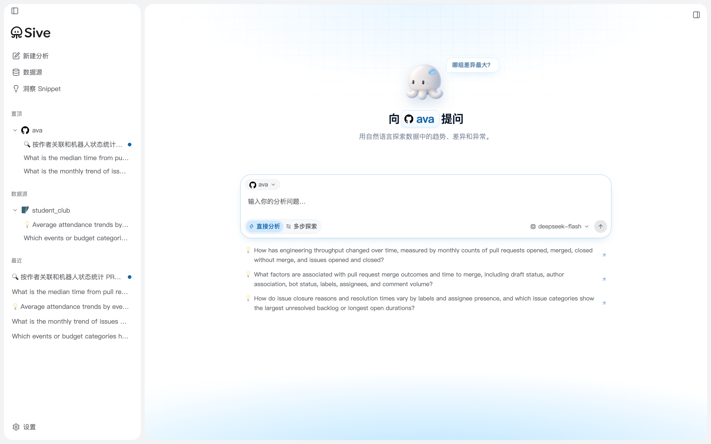
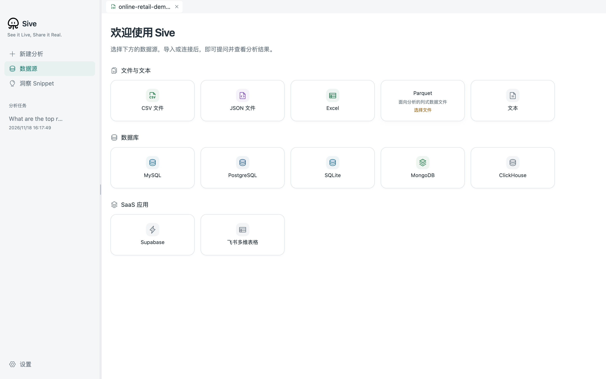
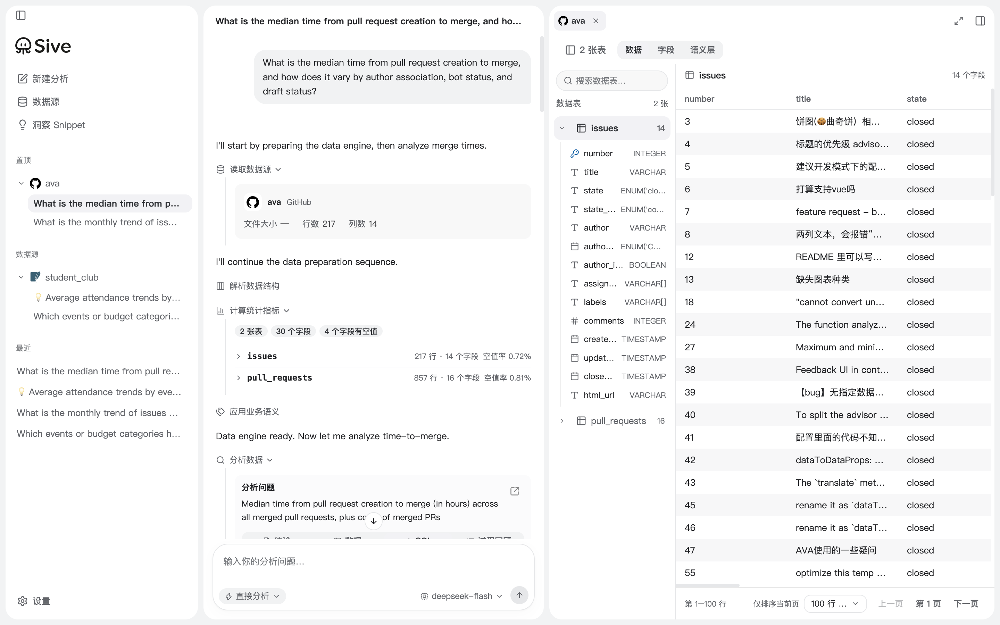
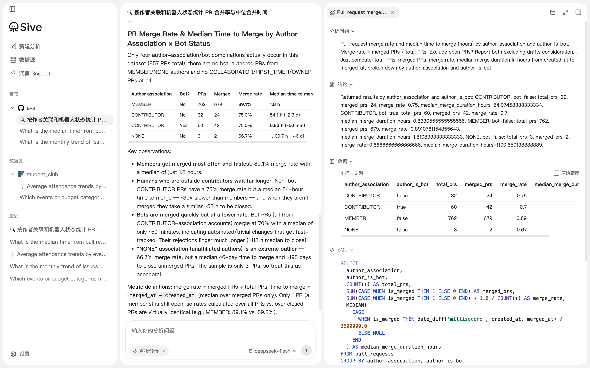
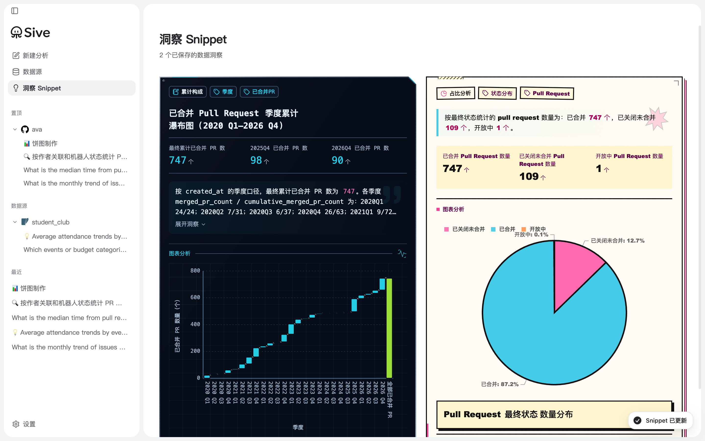

交给 Sive
Sive 是 AntV 出品、基于 AVA 4.0 的 AI 数据工作台，开源、免费，注重数据安全，帮你连接文件和数据库，用自然语言完成分析，并把结果变成清晰的图表

连接、分析、可视化
01 / 连接数据
文件与数据库
文件与数据库
一起分析
把本地文件和数据库接入同一个工作区，统一查看、管理和查询数据，并支持跨来源联合分析，让分散在不同文件或数据库中的数据可以一起使用

02 /
自然语言提问
像聊天一样
像聊天一样
完成数据分析
用日常语言描述你想了解的数据，Sive 会理解需求、生成查询并执行分析，将结果直接呈现在对话中；你可以基于结果继续提问，逐步缩小范围、调整分析方向，不需要先学会写 SQL

03 / 执行与溯源
分析过程
分析过程
每一步都可查
每次分析都会保留调用的工具、执行的查询语句和返回的数据，你可以逐步查看数据如何被读取、计算和处理，并将结论与实际结果对照，核验分析依据和计算过程

04 / 看见洞察
用合适的图表
用合适的图表
看懂你的数据
根据数据结构和分析目标自动选择合适的图表，将查询结果转化为直观的可视化，帮助你看清数据中的关系与变化；图表和分析保存在同一段对话中，方便查看结果并继续探索

你的下一个发现，就从这里开始
开始分析你的数据
开源、免费就在你的桌面
前往 GitHub Releases 选择对应安装包 · MIT 开源